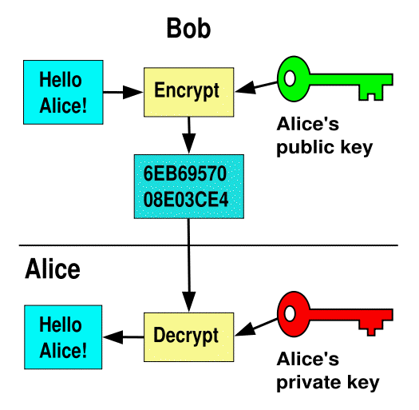

Encoding of Problems

Avoid Bias
... towards or against particular ATP systems
- Style of axioms
- Ommission of axioms
- Addition of lemmas
- Standard encoding
- Complete axiomatization
- Established theory
- No lemmas added
- Not biased
- Especial encoding: Standard, but not an established theory
- Augmented and reduced encoding: Originally encoded for
testing a particular ATP system, but encoding effective for ATP
systems in general.
- Biased encoding: Designed to be (ill-)suited to some
ATP system, calculus, or control strategy
- Applications would typically use
- Standard or especial encodings, at least initially
- Augmented or reduced encodings, with experience
Use non-biased TPTP problems